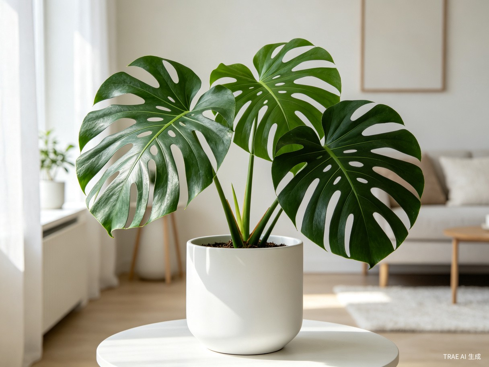

新手入门：选对第一盆植物
第一次养植物不知道选什么？推荐5种超级好养的室内植物，即使你经常忘记浇水也能活得好好的。从虎皮兰到绿萝，总有一款适合你。
系统学习室内植物养护知识，从入门到进阶

第一次养植物不知道选什么？推荐5种超级好养的室内植物，即使你经常忘记浇水也能活得好好的。从虎皮兰到绿萝，总有一款适合你。

浇水是养植物最大的难题。学会判断土壤干湿、掌握正确的浇水频率，让你的植物远离烂根困扰。记住：大多数植物死于浇水过多，而非过少。

不同植物对光照的需求各不相同。了解你家每个位置的光照条件，为植物找到最合适的摆放位置。朝南、朝北、朝东、朝西窗户的光照差异详解。

什么时候该换盆？用什么土最好？手把手教你正确换盆，让植物根系更健康，生长更旺盛。包含换盆时机判断、土壤配比、操作步骤详解。

发现植物叶子发黄、有斑点或虫子？教你识别常见的蚜虫、红蜘蛛、白粉病等病虫害，以及安全有效的家庭防治方法，不用农药也能解决。

龟背竹是当下最受欢迎的室内植物之一。从选购、摆放、浇水到修剪，全面解析如何让龟背竹长出美丽的裂叶，成为家里的颜值担当。

肥料是植物健康生长的重要保障。了解氮磷钾的作用、不同季节的施肥频率、有机肥与化肥的选择，让你的植物长得更茂盛。
多肉植物可爱又好养，是很多人的入门首选。学习叶插繁殖、控水技巧、度夏方法，轻松打造属于自己的多肉花园。
冬天是室内植物的考验期。温度、湿度、光照都会发生变化。学会调整养护策略，帮助植物顺利过冬，迎接春天的到来。